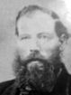

| Name |
Lyman J. (Joseph?)* JOHNSON, G Grandfather |
| Birth |
30 Jul 1834, Manlius, Onondaga, NY |
| Birth Memo |
or Sterling, Cayuga, NY |
| Death |
11 Dec 1886, Commerce, Oakland, MI502 Age: 52 |
| Father |
Lyman* JOHNSON (1800-1875) |
| Mother |
Catharine* SHERWOOD (1803-1851) |
|
 |